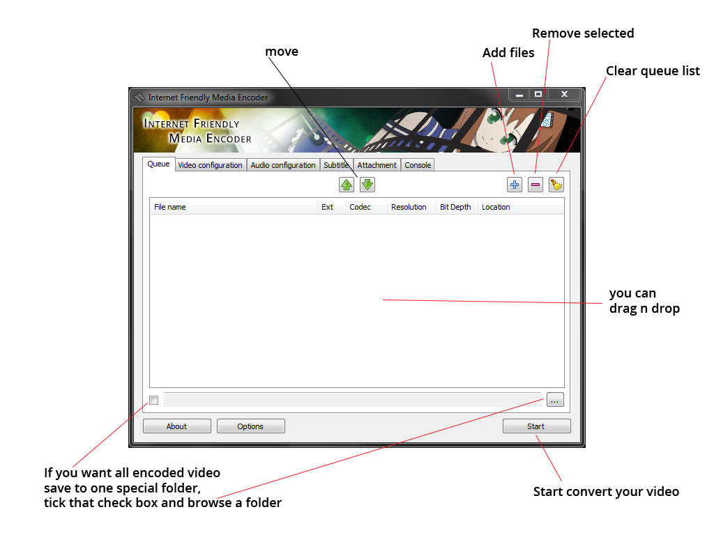
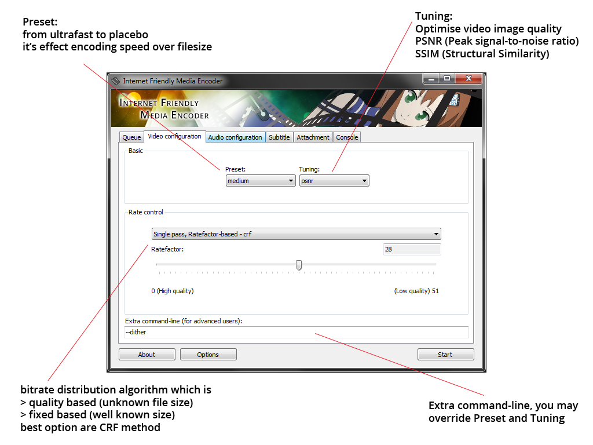
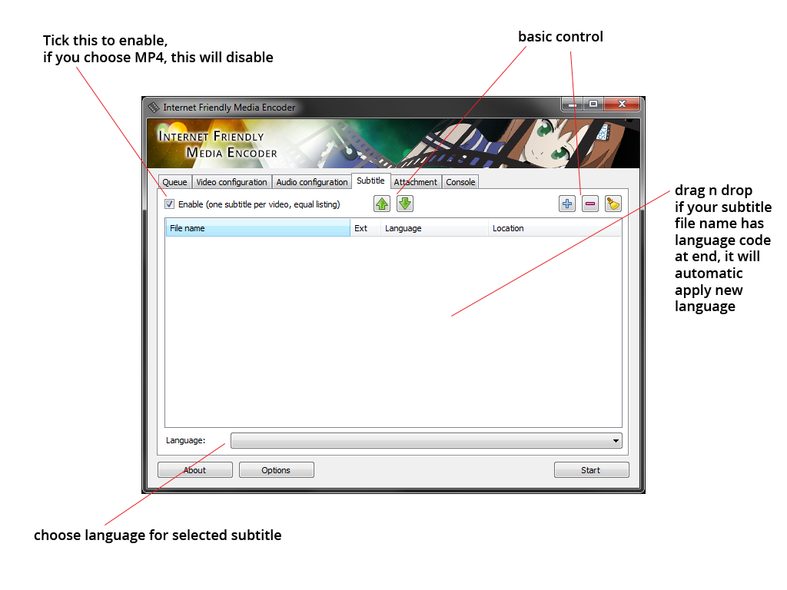
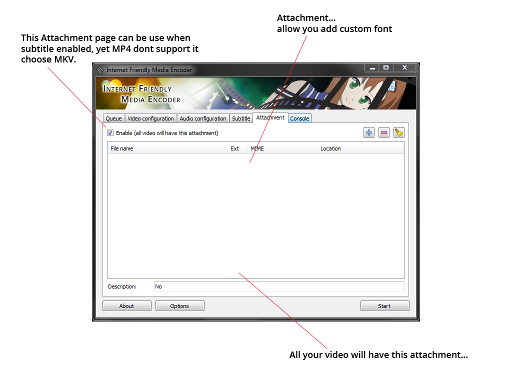
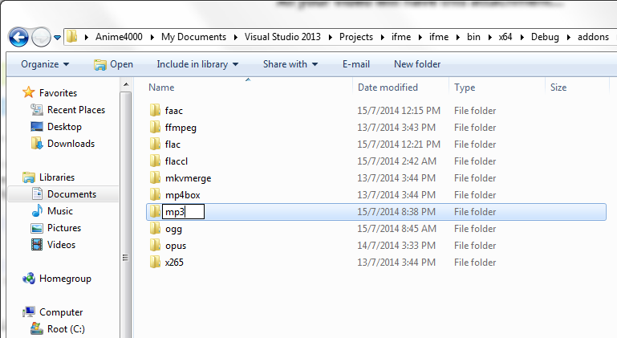
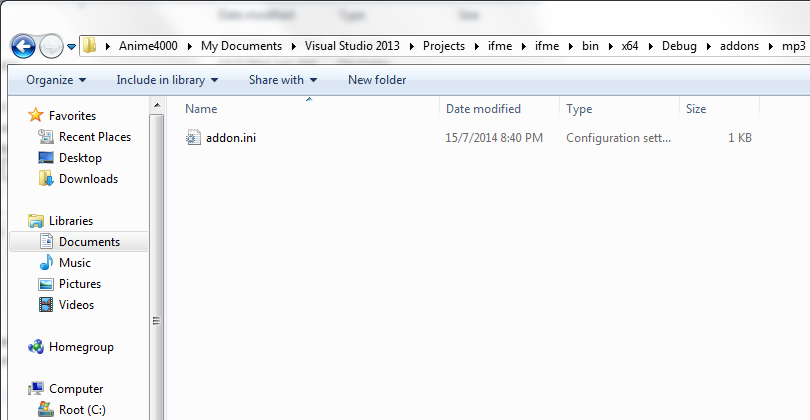
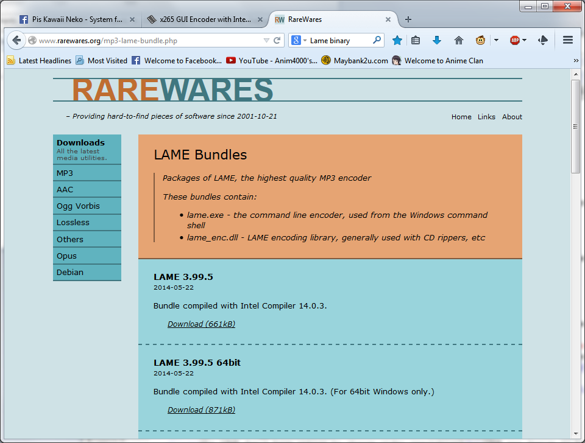
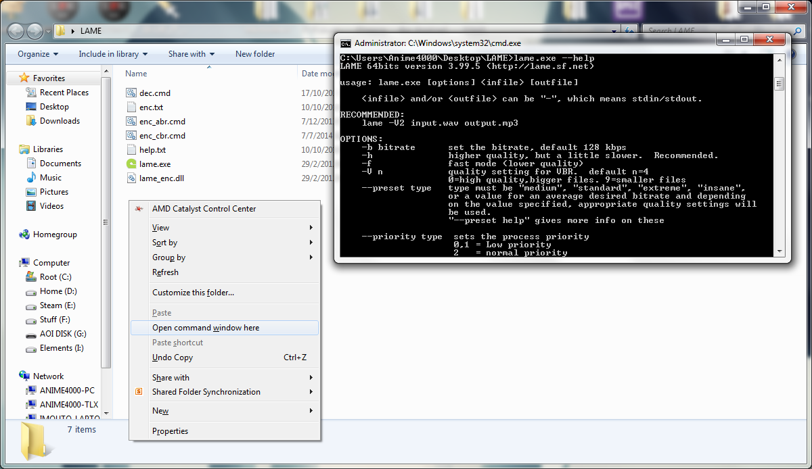
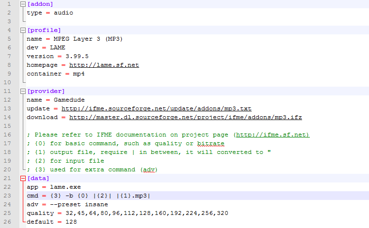
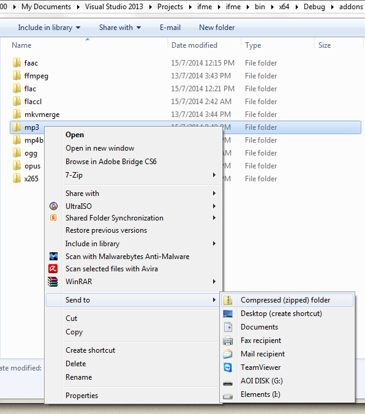

Documentation
Everything you need!
IFME was design to "simple to use" term, GUI are look is similar like Handbreak, x264vfw, etc... Here the basic:

Video and Audio configuration are pretty simple to use

Subtitle... only support one subtitle > one video
current limitation total queue must equal to total subtitle, if you have 10 video, must have 10 subtitle

Attachment! Add all your custom font!

Addons
Currently IFME only support addon for audio encoder, to make one is very simple, follow this guide-line
- First, create a folder under "addons" folder, for example "mp3"

- Download this sample INI file and save it to "mp3" folder (a folder that you created)

- Download a command-line encoder, for now we going to download MP3 by LAME (remember, we need a binary)

- Extract all to your MP3 addon folder. ".\addons\mp3\"
- This tricky part =P Hold Shift and Right Click, and click "Open command window here"
- And then type "lame.exe --help". this will display available basic command

- For example, LAME require: lame.exe -b 128 "in_file.wav" "out_file.mp3"
- Open "addon.ini" file with your favourite Notepad and Edit:

- Fill all, (you need a web server that can host, try dropbox web hosting (http://my.droppages.com/)
☒ type = audio (obviously)
☒ Profile, pretty basic info for encoder, that container showing that which container support, MP4 or MKV (type in lower case)
☒ Provider, name = enter your name.
☒ update = a HTTP url path that contain latest version, a txt file only contain version, refer to [profile]
☒ download = a HTTP url path that IFME will download if txt contain latest version.
☒ Data, app = a exe file name,
☒ cmd = a basic command, place holder: "{0}" holds LAME MP3 bitrate, "|{1}.mp3|" output file, "|{2}|" input file, "{3}" extra command that refer from "adv" below.
☒ quality = enter a valid bitrate value
☒ default = choose the best bitrate value
- Once done, save it. Go back addons folder and start "zip" your mp3 addon (no rar or 7z)

- You may rename the file and extension to "mp3byme.ifz" (.ifz is extension that FIME understand)
- Publish it... You can submit to Facebook page to get listed at our website... and yet submission need to be approved before become official. (check if this addon is working or not)
Help
- Why IFME don't have option to change video resolution?
IFME was design to keep video as original as possible, decrease resolution is bad, up-scale (increase) resolution also very bad!
- Latest IFME don't have option to change video bit depth!
If 10bit to 8bit seem acceptable, due x265 limitation, file will grow bigger then original! Never convert 8bit to 10bit, no make sense!
- IFME don't have option to change video fps!
Better don't, increase or decrease it make bad for video motion, let say a video in 30fps, increase to 60fps it make each 2 frame are equal, decrease to 25fps or lower will cause choppy, not smooth, IFME keep video original as is.
- Can I encode my game recording?
Yes! Yes you can, so far video Decoder only accept from FRAPS, if you record from AMD Gaming Evolve or nVidia Shadow Play, it may cause error, even Adobe Première can't detect!
- I can't upload to YouTube or Facebook!
H265 or HEVC still new codec, they don't have decoder to decode your uploaded video.
- Only one subtitle for each video?
For "simple to use" term, if you want to add more, use mkvmerge to add more!
- Why MP4 dont accept subtitle?
MP4 container is very limited, basically support only SRT format, just use MKV, much better.
- Why encode so slow!?
It's because encoder too powerful to shrink your video size into half, they need more power :)